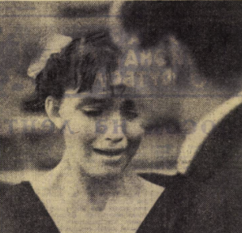

Sovetsky Sport. November 25, 1967. Children are allowed to be enrolled in gymnastics schools of the Ministry of Education of the RSFSR from the age of 10-11. However, according to our rules, a girl can perform the program of a Candidate for Master of Sports at the age of 13, and a master of sports at 14. This is absurd, since it takes 6 or 7 years to train a Master of Sports. I recruit groups from the age of five and consider this the only correct approach. From this age until 10, I work mainly on developing flexibility and joint mobility (splits, backbends), and also engage in choreography, studying the child's abilities so that if they turn out to be unsuitable for gymnastics I can transfer them to a coach in another sport in a timely manner.
From the age of five my children train every day, without days off or holidays. Physiology has proven that a skill fades within twenty-four hours and it needs to be reinforced. If a motor skill isn't solidified over years, then only a faint trace of it will remain after a day. In addition, within a few hours (10-12) the muscle tone of the human body decreases, and the body needs to be brought back to a state of readiness for athletic activity. These are just some of the arguments in favor of daily training!
But young children get tired faster and recover faster. They don't want to sit still, they want to run and play. Maybe you need to engage them in activities for 30-40 minutes at a time, and then give them a break. With the youngest children, it's best to use demonstration, since their visual memory is more developed than their motor skills. Of course, we need children's equipment: for example, you can't force girls to perform turns on the uneven bars using their knees.
About competitions. Children love to compete, they are ready for it every day. They can't wait like adults do. But with us, it's the opposite - adults have a lot of competitions, while children have few. I believe that small-scale competitions - even within the framework of a single children's sports school - should be held more often.
And so on, until the age of 10-11. At that age, of course, using simplified rules and a reduced set of events (without support elements), it is possible and necessary to hold championships at the regional sports school level, but no higher. At the age of 12, competitions can be held at the republican level.
By the way, there are almost no competitions for children aged 12-13. In our system, under the Ministry of Education, the Pioneer Games are held once every two years. No other organization plans anything like that at all. But a gymnast matures incredibly quickly. For example, I have planned for her to compete at the Candidate level in a year, but she is developing faster than that. This is an crucial moment, and we need to take advantage of it. She's ready to compete - let's do it! What can we do?
Then she turns 13 or 14, and she's old enough to compete at the Candidate level, but she lacks competitive experience, and she gets burned out. Physically, she can handle everything, but her nerves can't cope with the pressure due to lack of experience.
Furthermore, it's unacceptable for children to compete in the same competitions as adults. In our RSFSR children's sports school championships, both Masters and boys of the Second Youth Category were allowed to participate. These were 11-year-olds! I generally think that the principles for admitting participants to competitions need to be revised. You can't regulate everything: such-and-such an age is such-and-such a category. The age range and skill level should be determined in general terms, and then local organizers can make decisions based on the available participants.
In general, I propose replacing the existing ten ranks in gymnastics with five: Master of Sport, Candidate for Master of Sport, First Rank (adult), First Rank (junior) and Second Rank (junior). The age requirements could be approximately as follows: for girls - 14 for Master of Sport, 13 for Candidate, 12 for First Rank (adult), 11 for First Rank (junior), and 10 for Second Rank (junior). For boys: 16 years old for Master of Sport, 15 for Candidate, 14 for First Rank (adult), 13 for First Rank (junior), and 12 for Second Rank (junior). In addition, I am convinced that boys competing in the Master of Sport program do not need a compulsory program.
We need to precisely identify our main gymnastics centers and direct all possible resources and means to them: for example, in Belarus - Vitebsk and Brest, in the RSFSR - Voronezh, in Georgia - Tbilisi, etc. These will be our beacons in every respect. Otherwise, resources are distributed equally between the worst and the best, and this leads to a lack of individual attention and focus.
I would like to share my theory of training gymnasts. The life of a young person is divided into certain stages. In some of them, the body grows and develops rapidly, while in others, growth slows down and there is a kind of accumulation of reserves for a new surge. During the first of these periods, children should not be overloaded with training, since all their physical strength is going into growth. But then the slowdown comes, and that's when you should not be afraid to push them hard. The boundaries of these periods are conditional, and the coach must determine them for each individual student. But, according to my observations, the maximum growth for boys is 8-14 years old, and the period of accumulation is from 15 to 18. For girls, the picture is different: 10 to 14 years is the period of growth, and from 15 onwards, stabilization occurs.
These are the principles that guide me in my work.
I. MAMETYEV, Merited Coach of the RSFSR, Leninsk-Kuznetsk, Kemerovo Region

This is a photo taken by photojournalist A. Saakov, which we received yesterday. It was taken in Tbilisi on November 18 during a gymnastics match between the junior teams of the USSR and the GDR. The athlete is crying. She had just fallen off the balance beam, and this, of course, is very upsetting. But she also has another reason for tears. A minute ago, her coach came up to her and sharply declared that she was lazy, didn't want to work, and threatened to abandon her altogether. The gymnast is 14 years old. Her name is Nadya Duplyakova. The coach's name is I. Mametyev. In the article by the Merited Coach of the RSFSR I. Mametyev, which we are publishing today, as in a number of other articles on the issue of the gymnast's age, the technical side of the matter is mainly analyzed. No less important is the other side - the educational one. By publishing this photograph as a part of the discussion, we draw the attention of its future participants to this range of issues as well.